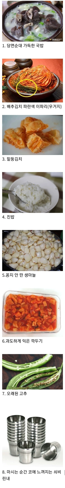

당면순대 극혐

당면순대 극혐
진밥은 진짜 아님
당면순대 굿
당면 저거는 법으로 순대라는 말 못 쓰게 해야함
톳폿키랑은 찰떡궁합이라 안됨
식기에 고춧가루랑 물때보이는것도
4번 진밥 빼고 다 괜찮음
0.바퀴벌레 보이는 가게
쇠비린내는 사람이 만졌을떄 유분기가 반응해서 나는 냄새래! 쇠 자체에서는 냄새가 안난데!
그럼 컵에 잔여 유분 때문에 냄새가 나는거겠군
당면순대는 진짜 만든새끼, 빠는 새끼
다 병신임 ㄹㅇ
어딜 씨발 분식집 떡볶이 국물에나 찍어 먹던 걸
국밥으로 쳐 가져와서 국밥 질을 낮추고 앉았냐
예전 5천원짜리 저가 국밥도 최소한 저딴건 안썼어
난 피순대비려서못먹겟던데 당면순대좋아
다시는 안가는 집 확정
6은 못참겠다
그만큼 장사가 안된다는 방증이기도 하고
옛날에 엄마랑 어떤 중국집 갔었는데 둥근 쇠 젓갈 써서 면은 면 대로 안 잡히고 물컵에선 냄새나던 좆같은 집이 있었지...
아니 김치 파란거 얼마나 맛있는데 ㅠㅠ
1번은 애초에 국밥집이 아니라 제목이랑 부합하지 않음6번 과하게 익은건 상관없음. 쓰레기 깍두기라 쓴맛만 존나 강하면 다시는 안가겠지만
맛이 문제가 아니라 물컹하게 씹히는게 ㅈ같음
당면순대는 왜지랄하는지 모르겠네 ㅋㅋ 당면순대말고 다른순대도 다 공장에서 뽑아내는 공산품인데
수제라고 하는집들 빼면 다 똑같은 공장제구만
근들갑임 단가 비싼데 당면순대면 좀 찐빠긴해도
당면순대가 단가 좀 낮긴하지 ㅇㅇ 근데 아바이순대 백암순대 이지랄하는곳 대부분 다 공장제구만 ㅋㅋ
좆도 모르면서 먹부심 부리는걸로 보이네
솔직히 당면순대넣은 국밥을 돼지국밥이나 그냥 국밥이라고 할순있어도 순대국밥이라 칭하는건 좀 긁히긴함
자 윗댓이랑 싸워라 이제
당면순대를 국밥에 쳐 넣는건 시발 좆같아 죽겠음. 다시는 안감. 시발 분식류를 왜 국밥에다 쳐 넣는거야. 단가가 제일 저렴해서 쳐 넣는다면서 똑같이 가격 쳐받는건 장사하기 싫다는 말이지. 고기순대, 백암순대, 암뽕순대, 피순대 이런거 넣어야지 진짜 순대 국밥임. 반박시 니 입맛이 틀린거니까 가서 반성하도록
ㅇㅈㅇㅈ
아저씨 글에서 이상하게 소주향이 나요
아저씨랑 국밥친구할래?
쇠비린내랑 걸레냄새
근들근들
진짜배기 국밥집은 특으로 주문하면 조선족 아주머니기 뚝배기 펄펄 끓는거 맨손으로 들고오는데 심지어 엄지손가락도 국에 살짝 들어가있음. 수 많은 국밥경험에 전혀 뜨겁지 않다는거지.
그리고 청결 깔끔 보다도 국밥집 던전 입구부터 약간 꾸릉내 슬며시 나면서 머리안감은 일용직노동자들이 대낮부터 소주마시면서 먹고있는게 진짜 맛집임
창자 안에도 세척 잘안해서 옥수수사료랑 똥같읃거 껴있고 머릿고기뽈살같은거에도 잔털있으면서 돼지껍데기부분에서도 적혹지같은거 나와야 진또배기맛집임
밥맛 뚝뚝떨어지게 적었네 ㅋㅋㅋ
어디 시벌 연변에서 국밥먹냐고;;
배추김치 초록부분은 한국배추에만 있음. 중국배추는 초록부분이 없다.
와씨 전부 극혐이네 마지막빼고
난 진밥 좋은데
옛날에 당면순대국밥이 더 일반적이엇던거로 기억하는데
그래서 죄악까지는 아니고
고기순대나 피순대는 좀 특별햇던거로 기억 당연히 가격대가 나가고.
근대 물가가올라서 욕을 먹나 싶기도함
3 4는 난 좋더라
물론 고두밥이 더 좋긴 함 국물 있으면
3,4,7빼고는 다 상관없는데
당면순대 싫어하는거 호들갑 너무심함 ㅋㅋ
찰순대 국밥 먹고싶다
8번 읽자마자 소름돋았다
당면순대가 더 낳던데
다른건 다 참아도 진짜 진밥은 절대 못참음
당면순대랑 진밥은 참기 힘들다.
당면순대는 분식으로 가라고!
딱 저조합인 대신에 한그릇 5천원이면 어때?
중국산 김치
국밥집이라 하지마라 진짜